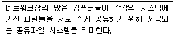
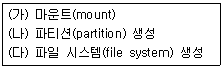
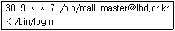
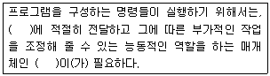
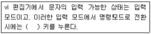
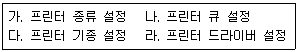
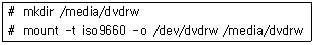

리눅스마스터-2급 (2010-09-04 기출문제)
1과목: 리눅스 운영 및 관리
1. 리눅스 파일 권한 사용자에 해당하지 않는 것은?
- 소유자(owner)
- 그룹(group)
- 타인(other)
- 관리자(administrator)
(정답률: 82%)

2. 콘솔에서 출력되는 파일정보 중에 디렉토리 파일임을 의미하는 파일속성 문자는?
- b
- c
- l
- d
(정답률: 86%)
3. 리눅스 설치 시 기본 쉘(shell)로 설정되어 쉘은?
- Bash
- korn
- c
- Bourne
(정답률: 87%)
4. 다음 설명이 의미하는 파일 시스템의 종류는?

- msdos
- isofs CD-ROM
- nfs
- sysv
(정답률: 93%)
5. 파일 훼손을 검사하고 바로잡기 위한 fsck의 명령 옵션으로 오류 파일에 대한 자동수리(복구)와 검사 도중 에러 발생 시 복구 유무를 물어보는 옵션으로 올바른 것은?
- fsck -rv /dev/hdal
- fsck -ra /dev/hdal
- fsck -lr /dev/hdal
- fsck -sv /dev/hdal
(정답률: 56%)
6. 윈도우 운영체제의 디스크 포맷(format)과 가장 유사한 리눅스 명령어는?
- fsck
- chmod
- ls
- mkfs
(정답률: 60%)
7. 파일시스템 관리 명령으로 가장 올바르지 않은 것은?
- mkfs
- fsck
- netstat
- cp
(정답률: 57%)
8. 홈 디렉토리(/home)에 사용자 계정 cache를 만들고， 홈 디렉토리에 생성된 사용자 디스크 사용 용량제한을 체크하는 명령으로 올바른 것은?
- #quotacheck-mf /home/cache
- #quota-mf /home/cache
- #quotaon -mf /home/cache
- # chkdsk -mf /home/cache
(정답률: 58%)
9. 사용 중인 시스템에 새로운 HDD를 추가 설치하기 위한 순서로 올바른 것은?

- (가)→(나)→(다)
- (다)→(가)→(나)
- (나)→(다)→(가)
- (다)→(나)→(가)
(정답률: 74%)
10. 웹서버 설치를 위해 APM Setup 파일을 다운로드 하여 리눅스 파일 시스템에 설치하려고 한다. 이때 가장 적합한 설치 디렉토리는?
- /boot
- /usr/local
- /var
- /lib
(정답률: 60%)
11. 프로세스와 프로세스가 서로 메시지를 보내기 위한 통선수단을 의미하는 용어는?
- signal
- protocol
- device
- service
(정답률: 72%)
12. 프로세스 상태확인 명령인 ps를 옵션 없이 사용하였을 경우 확인할 수 있는 정보로 올바르지 않은 것은?
- PID : Process ID
- TTY : 프로세스와 연결된 터미널 포트
- TIME : 프로세스가 사용한 CPU 사용시간
- USER : 프로세스 사용자
(정답률: 33%)
13. ‘ps -aux’를 통해 출력된 상태정보 중에 STAT 상태의 정보표현 기호와 의미가 올바르지 않은 것은?
- R : Running, 실행중인 상태
- S : Sleeping 상태
- I : Idle 상태
- P : Playing, 프로세스 실행상태
(정답률: 55%)
14. 리눅스의 다중처리(multitasking) 기능 중에 프로세스를 background로 실행하기 위해 사용하는 옵션 기호는?
- ^
- &
- %
- @
(정답률: 80%)
15. 데몬(daemon) 프로세스 중에서 웹서비스와 관련된 프로세서 이름으로 올바른 것은?
- httpd
- telnet d
- find
- tar
(정답률: 82%)
16. 프로세스의 연관관계를 한 눈에 출력 가능한 명령은?
- hangup
- pstree
- ps
- cron
(정답률: 81%)
17. 동시에 실행되는 프로세스의 우선순위 변경 명령으로 알맞은 것은?
- nice
- cron
- mkfs
- ps
(정답률: 87%)
18. crontab에 대한 설명으로 올바른 것은?

- 9월 30일 월요일에 /bin/login의 내용을 master@ihd.or.kr 주소로 메일을 보낸다.
- 토요일 오전 9시30분에 /bin/login의 내용을 master@ihd.or.kr 주소로 메일을 보낸다.
- 일요일 오전 9시30분에 /bin/login의 내용을 master@ihd.or.kr 주소로 메일을 보낸다.
- 토요일 오전 9시30분에 /bin/login의 내용을 /bin/mail로 메일을 보낸다.
(정답률: 72%)
19. top 명령에 대한 설명으로 틀린 것은?
- s 옵션을 사용하면 프로세스 정보 갱신 주기를 결정할 수 있다.
- top으로는 평균 시스템 부하는 알 수 없다.
- PID, USER, CPU 점유율 등에 대한 정보가 표시된다.
- 수행 중인 프로세스들을 CPU 사용 사간 또는 메모리 사용량 등에 따라 정렬 가능하다.
(정답률: 70%)
20. httpd와 같은 웹데몬 프로세스가 또 다른 웹데몬 프로세스를 시작시킬 때 새롭게 생성된 프로세스를 일 컫는 용어는?
- parent process
- sibling process
- child process
- ancestor process
(정답률: 68%)
21. 다음 중에서 명령행 편집기능을 제공하는 쉘들만 모아둔 것은?
- bsh, csh
- bash, ksh
- csh, sh
- ksh, sh
(정답률: 73%)
22. 일반 유저가 현재 사용 중인 쉘을 변경하고자 할 때, 필요하지 않은 것은?
- 사용자 ID
- 사용자 패스워드
- chsh 명령어
- 변경하고자 하는 쉘의 절대 경로
(정답률: 44%)
23. 다음 ( ) 안에 들어갈 내용으로 알맞은 것은?

- 디스크, 메모리
- CPU, 내부 명령어
- 커널, 쉘
- 주변장치, 운영체제
(정답률: 80%)
24. 터미널 설정 내용을 확인하기 위해서 사용할 수 있는 명령은 어느 것인가?
- stty -a
- help -k
- show -a
- set -k
(정답률: 74%)
25. 사용자의 현재 위치를 나타내는 본 쉘 환경변수는 무엇인가?
- HOME
- PATH
- PSI
- PWD
(정답률: 75%)
26. 다음 특수 쉘 환경변수에 관한 설명으로 틀린 것은?
- TZ 변수에는 date 명령에 대한 시간대를 지정한다.
- PSI 변수에는 시스템 프롬프트를 지정한다.
- MAIL 변수에는 사용 할 전자우편 프로그램의 종류를 지정한다.
- LOGNAME 변수에는 로그인 이름을 지정한다.
(정답률: 35%)
27. 쉘의 rc 파일에 대한 설명중 틀린 것은?
- rc 파일들은 쉘이 실행될 때 실행된다.
- rc 파일이 변경되었다면 다른 작업 없이도 자동적으로 변경된 내용이 적용된다.
- rc 파일은 쉘이 실행될 때 마다 적용될 수 있는 특정 쉘에 관계된 변수와 설정 사항을 포함한다.
- .bashrc와 .cshrc는 rc 파일의 예이다.
(정답률: 60%)
28. 다음 중 bash에서 사용할 수 있는 명령어 히스토리 기능에서 !!와 항상 동일한 결과를 얻을 수 있는 명령은?
- history
- !-l
- !^
- !?
(정답률: 59%)
29. Linux에서 사용되는 편집기들에 관한 설명 중 틀린 것은?
- Pico는 윈도우즈 환경에서 메모장과 그 사용법이 비슷하다.
- vi 편집기는 명령 모드와 입력 모드, EX 모드의 세가지 방식이 있다.
- emacs 편집기는 비모드 방식이다.
- compress는 PINE에 내장되어 있는 편집기이다.
(정답률: 50%)
30. vi 편집기에 관한 설명 중 틀린 것은?
- Ex 모드는 명령모드에서 콜론(:)을 입력하면 된다.
- vi 편집기 설정 파일의 이름은 .vimrc 이다.
- 입력모드에서 명령모드로의 전환방법과 명령 모드에서 입력 모드로의 전환방법은 동일 하다.
- vi 편집기에서 커서의 이동이 자유롭다.
(정답률: 73%)
31. 다음 ( )안에 들어갈 내용으로 알맞은 것은?

- CTRL
- ALT
- ESC
- Shift
(정답률: 81%)
32. vi 편집이게서 편집한 내용을 저장하지 않고 강제적으로 종료를 하려면 Ex 모드에서 어떤 키를 입력해야 하는가?
- :a!
- :w!
- :s!
- :q!
(정답률: 87%)
33. vi 편집기에서 입력 모드로 전환할 때 사용되는 키에 대한 설명 중 틀린 것은?
- I : 입력을 현재 커서의 위치 앞에서 삽입 할 수 있다.
- a : 입력은 현재 커서 위치의 뒤에서 삽입 할 수 있다.
- A : 입력을 현재 줄 끝에서 삽입 할 수 있다.
- o(소문자) : 입력을 현재 줄 위에서 삽입 할 수 있다.
(정답률: 51%)
34. emacs 편집기의 삭제 명령에 대한 설명으로 틀린 것은?
- <Ctrl> + d : 이전 단어의 삭제
- <Alt> + k : 현재 문장의 커서 뒤부터 모두 삭제
- <Del> : 커서 앞 글자의 삭제
- <Ctrl> + k : 현재 라인 커서 뒤부터 모두 삭제
(정답률: 27%)
35. 레드햇 패키지 관리자(RPM)에 대한 설명 중 틀린 것은?
- 압축을 풀고 난 후, 소스를 바이너리 파일로 변환하기 위한 컴파일 작업이 반드시 필요하다.
- 기존 파일의 삭제 없이 업그레이드가 가능하다.
- 처음 설치한 패키지 상태와 파일 크기가 다른지 여부를 점검 할 수 있다.
- 패키지에 대한 비교적 자세한 정보를 얻을 수 있다.
(정답률: 57%)
36. RPM 명령의 옵션과 그 기능을 설명한 것 중 틀린 것은?
- 'rpm -a 패키지명‘ : 패키지의 설치
- 'rpm -U 패키지명‘ : 패키지의 업그레이드
- 'rpm -e 패키지명‘ : 패키지의 삭제
- 'rpm -y 패키지목록‘ : 패키지의 점검
(정답률: 54%)
37. 설치된 패키지들 중에서 perl이 설치되어 있는 지를 확인하는 명령으로 가장 적절한 것은?
- rpm -c | search perl
- rpm -s | get perl
- rpm -qa | grep perl
- rpm -k | find perl
(정답률: 74%)
38. 원래의 패키지 파일과 설치된 패키지 파일이 다른 정보를 가질 때 출력되는 점검상태 표시 문자의 해석 중 틀린 것은?
- S : 파일 크기
- O : 사용자
- T : 파일 최종 변경 시간
- L : 심볼릭 링크
(정답률: 60%)
39. dpkg 프로그램을 이용, 종속성을 점검하는 특정 debian 패키지를 완전히 제거할 때 사용하는 플래그 명령은 다음 중 어느 것인가?
- --install
- --purge
- --unpack
- --search
(정답률: 56%)
40. gzip 프로그램을 사용하여 압축된 소프트웨어 패키지에 대한 특정작업을 할 때 사용되는 플래그들에 대한 설명 중 틀린 것은?
- -e : 압축을 해제한다.
- -q : 모든 경고를 없앤다.
- -V : 버전 번호를 표시해 준다.
- -9 : 압축된 결과 파일이 더 작아지게 압축한다.
(정답률: 47%)
41. 다음 유틸리티에 대한 설명 중 틀린 것은?
- compress : 압축률이 gzip에 비해 좋은 편은 아니다.
- gzip : 압축한 파일을 풀 때 gunzip이나 gzip -r 를 사용한다.
- bzip2 : 압축률이 gzip에 비해 높은 편이다.
- tar : 파일을 묶을 때는 c 플래그를 사용한다.
(정답률: 48%)
42. 다음 tar 명령에 사용되는 플래그에 대한 설명 중 틀린 것은?
- 파일을 풀 때는 d 플래그를 사용한다.
- 파일을 묶으면서 묶이는 파일의 이름과 크기를 보기 위해서는 v 플래그를 사용한다.
- tar 파일 내의 묶여 있는 파일의 리스트를 보려면 t 플래그를 사용한다.
- 여러 장의 플로피 디스크에 나누어 저장하려면 M 플래그를 사용한다.
(정답률: 43%)
43. 리눅스와 윈도우 운영체제 간 공유폴더 생성 및 백업 등을 위해 사용하는 서비스는?
- JetDirect
- Samba
- LinePrinter
- Postscript
(정답률: 72%)
44. 프린터가 현재 프린팅 작업을 할 수 있는지 유무를 알려주는 명령어는?
- lpc
- lpr
- pr
- lpd
(정답률: 57%)
45. 리눅스 프린터 설치 과정 순서가 올바른 것은?

- 가 → 나 → 다 → 라
- 나 → 가 → 다 → 라
- 라 → 가 → 나 → 다
- 라 → 다 → 나 → 가
(정답률: 51%)
46. CD-ROM 및 플로피디스크 장치를 구매하여 리눅스 시스템에 설치하기 위한 마운트 포인터가 위치하는 일반적인 디렉토리로 올바른 것은?
- /bin
- /etc
- /dev
- /mnt
(정답률: 61%)
47. 리눅스 명령 실행에 대한 설명으로 틀린 것은?

- DVD-RW를 사용하기 위한 마운트 명령이다.
- 마운트 이후 사용을 마친 다음에는 umount 명령을 이용하여 DVD-RW를 제거할 수 있다.
- iso9660 포맷 형태로 DVD-RW 디스크를 읽어 낼 수 있다.
- DVD-RW 장치를 마운트 하였기 때문에 CD-ROM 디스크는 읽을 수 없다.
(정답률: 75%)
48. CD-ROM 등의 저장장치에 접근하기 위해 가장 먼저 수행해야 하는 명령은?
- lsmod
- mount
- umount
- install
(정답률: 71%)
2과목: 리눅스 활용
49. 다음 중 X 윈도우 시스템의 구성 요소 중 하나인 Xtoolkit에 해당되지 않는 것은?
- Xaw
- Xt Intrinsics
- Xlib
- Motif
(정답률: 38%)
50. 다음 중 RedHat 계열의 리눅스 시스템에서 주로 사용하는 X 윈도우 설정 프로그램은 무엇인가?
- Xconfigurator
- XF86Setup
- xf86config
- XFSetup
(정답률: 48%)
51. 다음 중 X 서버가 관리하는 하드웨어 자원으로 볼 수 없는 것은?
- 디스플레이
- 디스크
- 마우스
- 키보드
(정답률: 58%)
52. Xconfigurator 등 X 윈도우 시스템 설정 프로그램을 통해 설정할 수 있는 주변기기와 거리가 먼 것은?
- 디스플레이
- 키보드
- 마우스
- usb
(정답률: 68%)
53. 다음 중 Qt 라이브러리를 기반으로 하는 X 윈도우 테스트탑 환경은?
- Gnome
- KDE
- CDE
- Motif
(정답률: 70%)
54. X 윈도우 데스크탑 환경 Gnome에 대한 설명으로 틀린 것은?
- GNU 프로젝터의 일환으로 개발된 데스크탑 환경이다.
- GTK+ 라이브러리를 기반으로 한다.
- 소스 코드가 공개되어 있고 무료로 배포된다.
- 전용의 윈도우 관리자만을 사용하여야 한다.
(정답률: 81%)
55. 다음 중 KDE 데스크탑 환경의 구성요소와 거리가 먼 것은?
- 패널(pannel)
- 태스크바(taskbar)
- 데스트톱(desktop)
- 도크(doke)
(정답률: 65%)
56. MS 윈도우즈의 포토샵과 유사한 기능을 하는 X 윈도우 상의 그래픽 편집 SW는 무엇인가?
- MPLAYER
- MTV
- GIMP
- XMMS
(정답률: 74%)
57. 다음 중 그 성격이 다른 하나는?
- Ethernet
- Token Ring
- FDDI
- CDMA
(정답률: 39%)
58. X.25 프로토콜에 대한 설명으로 틀린 것은?
- WAN에서 널리 쓰이는 프로토콜이다.
- 회선 교환(circuit switching) 방식에 주로 쓰인다.
- 호스트 시스템 또는 LAN과 패킷교환망 간의 인터페이스를 제공한다.
- LAN과 LAN 상에서 쓰이는 것이다.
(정답률: 31%)
59. 다음 중 한번에 한 노드(컴퓨터)만 송신할 수 있어 노드의 숫자가 전체 망의 성능에 큰 영향을 미치는 네트워크 토폴리지는?
- 스타형 토폴리지
- 버스형 토폴리지
- 링형 토폴리지
- 메쉬형 토폴리지
(정답률: 47%)
60. LAN 통합을 위한 통신 장비 중 전송 신호를 재생하여 전달하는 장치로 가장 알맞은 것은?
- 허브
- 게이트웨이
- 라우터
- 리피터
(정답률: 61%)
61. 통신망을 연결해 주고 전송하는 패킷의 수신처를 바탕으로 가장 효율적인 경로로 패킷을 전달하는 역할을 하는 통신 장비를 무엇이라고 하는가?
- 라우터
- 리피터
- 브리지
- 게이트웨이
(정답률: 70%)
62. 다음 근거리 통신망용 프로토콜 중 Novel사의 Netware 서버를 사용하는 경우 적용되는 프로토콜은?
- IPX/SPX
- TCP/IP
- NetBEUI
- X.25
(정답률: 34%)
63. IP, ICMP, ARP 프로토콜 등은 OSI 7계층 중 어느 계층에 해당하는가?
- 응용 계층
- 표현 계층
- 네트워크 계층
- 데이터 링크 계층
(정답률: 80%)
64. 다음 TCP/IP 프로토콜들 중 데이터가 올바른 순서대로 전달되었는지 확인하는 역할을 담당하는 transport 계층의 프로토콜은 무엇인가?
- TCP
- UDP
- IP
- ICMP
(정답률: 57%)
65. 리눅스 시스템에서 포트 번호가 정의되어 있는 파일은 무엇인가?
- /etc/protocols
- /etc/inittab
- /etc/ports
- /etc/services
(정답률: 49%)
66. IP 주소에 대한 설명으로 적절하지 않은 것은?
- 4개의 8 비트 숫자로 구성된다.
- 일반 사용자를 위한 IP 주소의 유형은 클래스A, 클래스B, 클래스C, 그리고 클래스D로 나뉘어 진다.
- IP 주소를 다루는 프로토콜은 IP 프로토콜이다.
- IP 주소의 최상위 세 비트가 이진수 110이면 클래스 C에 해당하는 주소이다.
(정답률: 47%)
67. 인터넷 주소 도메인의 체계상 같은 레벨의 것으로 볼 수 없는 것은?
- com
- net
- edu
- co
(정답률: 61%)
68. 다음 중 루프백 네트워크 인터페이스에 할당되는 IP 주소는?
- 192.168.1.1
- 255.255.0.0
- 255.255.255.0
- 127.0.0.1
(정답률: 83%)
69. 다음 리눅스 명령어 중 IP 네트워크의 패킷 전송 경로를 확인할 수 있는 명령은 무엇인가?
- ipconfig
- route
- traceroute
- ping
(정답률: 57%)
70. 다음 중 리눅스 시스템에서 여러 인터넷 서비스 데몬들의 수행을 총괄하는 프로그램은?
- xinetd
- ftpd
- xdm
- initd
(정답률: 52%)
71. 다음 유선 통신의 전송 방식 중 회선교환 방식의 특징에 대한 설명으로 올바르지 않은 것은?
- 고정된 대역폭을 사용한다.
- 전송 도중 메시지는 저장되지 않는다.
- 호출후 오버헤드 비트가 없다.
- 속도와 코드의 변환이 항상 있다.
(정답률: 49%)
72. TCP/IP 프로토콜들 중 라우팅 테이블을 관리하는 프로토콜은 어느 것인가?
- IP 프로토콜
- TCP 프로토콜
- ICMP 프로토콜
- UPD 프로토콜
(정답률: 38%)
73. IPv6(Internet Protocol version 6)의 주소체계는 몇 비트로 이루어져 있는가?
- 32비트
- 64비트
- 128비트
- 256비트
(정답률: 72%)
74. ftp 클라이언트에서 사용할 수 있느 명령 중 파일의 전송과 직접적인 관련이 없는 명령은 무엇인가?
- get
- put
- mget
- hash
(정답률: 73%)
75. 다음 중 E-mail 송수신과 직접적인 관련이 적은 프로토콜은?
- IMAP
- POP3
- SMTP
- SNMP
(정답률: 67%)
76. 인터넷 접속 시 모뎀과 전화선을 사용하는 경우 가장 관계가 깊은 프로토콜은?
- DHCP
- IGMP
- SLIP
- ARP
(정답률: 53%)
77. 리눅스 클러스터의 특징으로 옳지 않은 것은?
- 오픈 소스인 리눅스를 이용 사용자의 필요에 맞게 다양한 클러스터를 제작할 수 있다.
- 리눅스 발전에 따른 효과를 지속적으로 클러스터에 적용할 수 있다.
- 저렴한 PC와 네트워크 장비를 사용하여 저비용 클러스터를 구축할 수 있다.
- 수천 개 이상의 노드 수를 가지는 대형 클러스터도 효율적으로 구축할 수 있다.
(정답률: 48%)
78. 리눅스 Beowulf 클러스터에 대한 설명으로 적절하지 않은 것은?
- NASA 고다드 연구소에서 1994년부터 시작 되었다.
- 대규모 생산되는 PC와 네트워크 장비들을 사용하여 클러스터를 구축한다.
- 계산용 클러스터이면서 고가용(high availability)도 함께 추구한다.
- MPI를 기반으로 하는 수치 계산용 병렬 프로그램 수행에 주로 사용된다.
(정답률: 45%)
79. 다음 중 블루투스에 대한 설명으로 틀린 것은?
- 소비 전력이 적은 편이다.
- 전송 거리는 1km 정도이다.
- 동기적 전송 방법은 주로 음성 전송에 사용된다.
- 휴대전화, 노트북 등 각종 디지털 가전 제품의 연결을 위한 근거리 무선 통신 기술이다.
(정답률: 77%)
80. 임베디드 시장에 리눅스가 OS로서 각광받는 이유로 알맞지 않은 것은?
- 제품 개발 기간이 짧아진다.
- 많은 메모리 사용을 한다.
- 개발비용이 저렴하다.
- 멀티유저, 멀티테스킹, TCP/IP 네트워킹을 기본으로 지원한다.
(정답률: 72%)